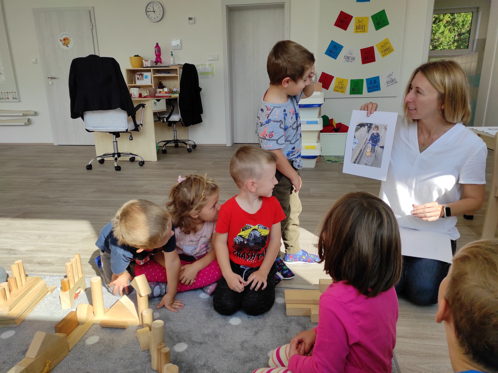
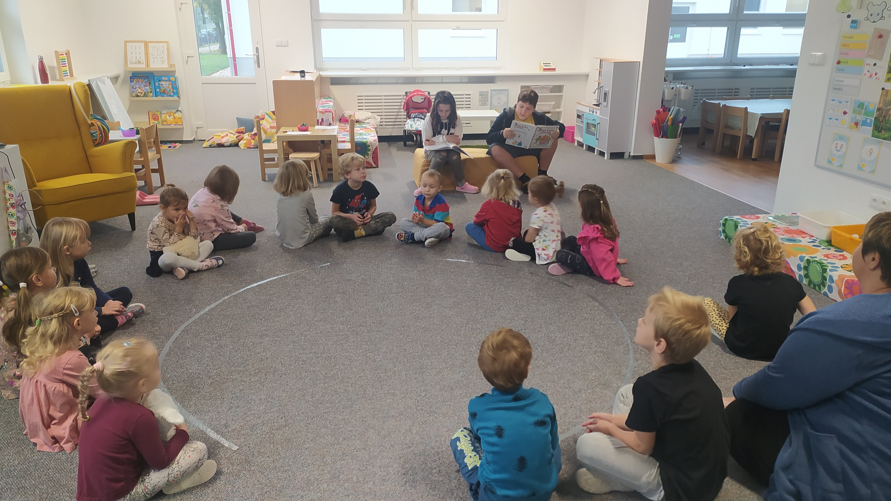
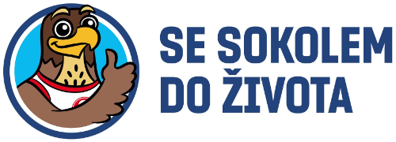
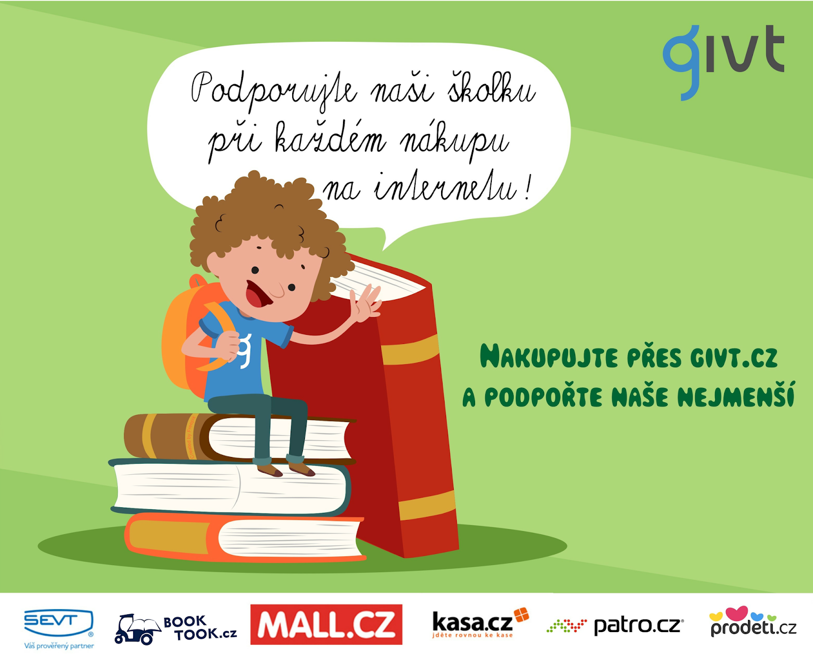
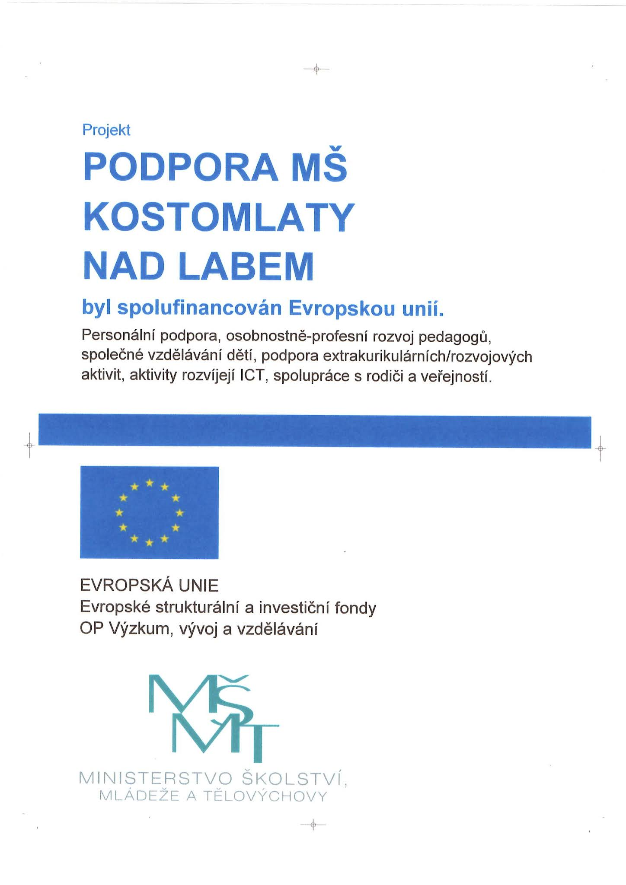
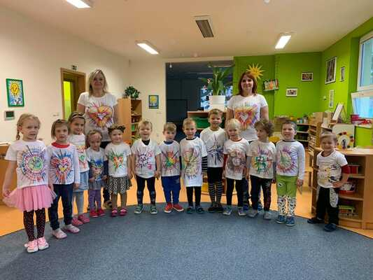

Projekty
V rámci školy
Rodiče vítáni
odkaz: OdkazFrantiškův cestovatelský deník a fanynka pomáhá
František se vydává (stejně jako loni) na turné s dětmi z Červené třídy. Fanynka je velká pomocnice, učí se s dětmi zapojovat do běžných domácích prací.
Co dělat, když se u vás doma objeví František nebo Fanynka?
Děti mají možnost vzít Františka na výlet nebo mu ukázat něco zajímavého ze svého života. Děti mají možnost aktivně se zapojit s Fanynkou do běžných domácích prací a podílet se na nich. Děti vědí, že jsou František s Fanynkou vzácná návštěva a že je třeba zacházet s nimi ohleduplně.
Čím mohu přispět jako rodič při Františkově putování a návštěvě Fanynky doma?
Mohu je vyfotit s dítětem v akci.

Více fotek zde: Františkův cestovatelský deník
Čím mohu přispět jako rodič při Františkově putování a návštěvě Fanynky doma?
Mohu je vyfotit s dítětem v akci.
Co se bude dít dál?
Fotografii zašlu na email: mskostomlatynl@gmail.com. Tyto fotografie budou vloženy do deníků Františka a Fanynky, které jsou dětem volně k dispozici. Smyslem tohoto projektu je sdílení zkušeností a zážitků s dětmi v MŠ.
Festival Den poezie - putovní výstava
Mateřská škola Kostomlaty nad Labem, příspěvková organizace ve spolupráci s Obecním úřadem Kostomlaty nad Labem a Mateřskou školou Pampeliška Lysá nad Labem pořádá od 1. do 30. listopadu „Putovní výstavu“ v rámci Festivalu Den poezie.
Festival Den poezie se koná každoročně na počest narození Karla Hynka Máchy, koordinátorem festivalu je Společnost poezie z.s.
Více fotek zde: Den poezie
Celé Česko čte dětem
Tento projekt bude ve školním roce 2022/2023 probíhat od října ve spolupráci se Základní školou Kostomlaty nad Labem formou pátečního předčítání dětí dětem.
Projekt proběhne v Zelené a Žluté třídě v dopoledních hodinách. Od měsíce února 2023 se mohou do projektu zapojit také rodiče dětí ve svých kmenových třídách v rámci čtení při odpočinku dětí každé pondělí 12:15 - 12:45.

Více fotek zde: Česko čte dětem
Se Sokolem do života
Projekt Se Sokolem do života se zaměřuje na nejmladší generaci - předškolní děti.
Je rozdělený do tří kategorií podle obtížnosti, aby vyhovoval růstu a vývoji dětí v předškolním věku. Má podobu pravidelného cvičení dětí v tělocvičně ZŠ Kostomlaty nad Labem dle daných metodik Sokola.

GIVT
MŠ je zapojena do charitativního projektu, který podporuje neziskové organizace, tedy i nás.
Chcete-li nás podpořit, začněte zde.

Evropské strukturální fondy

Digitalizujeme školu

Šablony II
Projektový den "Létající barvy" spolufinancovaný EU OP VVV

Více fotek ve sbírce: Létající barvy